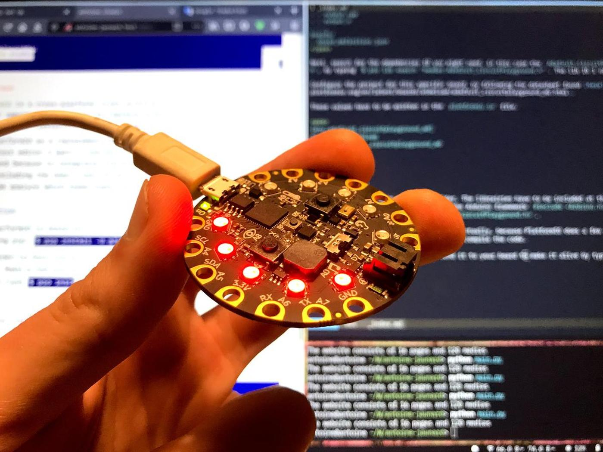

Two weeks ago, I designed a pomodoro timer during the Electronics design week. It's now time to program it. I'm going to write the piece of code that will light my LEDs as time goes by and find a way to send it to the ATtiny1614 chip. I'm going to focus on the latter: how to send a program (= program) a chip. Well, that was the plan.
Unfortunately, in the meantime, the coronavirus has hit Spain (and the whole world). We are now all in quarantine, with no access to the lab. I will have to work from home, with the equipment I already have, nothing more.
pomo-circuit-playground
For this reason, I'm going to use a Circuit Playground Express. This tiny board is already equipped with 10 mini NeoPixels, 1 motion sensor, 1 temperature sensor, 1 sound sensor, 1 mini speaker, 2 push buttons, 1 slide switch, infrared receiver and transmitter and 8 alligator-clip friendly input/output pins. It's a perfect board for quick prototyping and code experiments.
If it's running, press the left button to pause the timer
If it's paused, press the left button to resume the timer
If it's paused, press the right button to stop the timer
When it's running, the LEDs light up one by one until the time limit
When it's running and it's a work period, LEDs are red
When it's running and it's a break period, LEDs are green
When it's paused, all the LEDs are light up and blue
The code that does this
For this software I am using the Arduino framework. This framework, like any other framework, is a collection of shortcuts that aims to make the programmer's life easier. At the end of the day, the code you write using a framework is compiled into its original language, which is, in this case, C ++.
bool button_left;
bool button_right;
bool is_active = false;
bool is_paused = false;
int counter = 0;
int steps = 10;
int pomo = 30 * 600;
int pomo_work = pomo / 6 * 5;
int pomo_break = pomo / 6 * 1;
void setup() {
CircuitPlayground.begin();
}
void on_second(int counter) {
CircuitPlayground.clearPixels();
if (counter <= pomo_work) {
// work
for (int i = 0; i <= steps; i++) {
if (counter > pomo_work / steps * i) {
CircuitPlayground.setPixelColor(i, 255, 0, 0);
}
}
} else if (counter > pomo_work && counter <= pomo) {
// break
for (int i = 0; i <= steps; i++) {
if (counter - pomo_work > pomo_break / steps * i) {
CircuitPlayground.setPixelColor(i, 0, 255, 0);
}
}
}
}
void bip() {
CircuitPlayground.playTone(200, 10);
}
void loop() {
button_left = CircuitPlayground.leftButton();
button_right = CircuitPlayground.rightButton();
if (counter > pomo) {
CircuitPlayground.clearPixels();
counter = 0;
}
if (button_left) {
CircuitPlayground.clearPixels();
if (!is_active) {
is_active = true;
bip();
} else if (is_active && !is_paused) {
is_paused = true;
bip();
} else if (is_paused) {
is_paused = false;
bip();
}
}
if (button_right) {
if (is_active && is_paused) {
is_active = false;
is_paused = false;
counter = 0;
CircuitPlayground.clearPixels();
bip();
}
}
if (is_active && !is_paused) {
counter = counter + 1;
}
if (is_paused) {
for (int i = 0; i <= steps; i++) {
CircuitPlayground.setPixelColor(i, 0, 0, 55);
}
}
if (counter % 10 == 0) {
on_second(counter);
}
delay(100);
}
Reading a datasheet isn't the easiest thing to do. It is full of technical details that often interfere with the actual data one can look after.
I'll now take a tour of the things that seem important to me when reading a datasheet. And for that, we'll have a look at the datasheet of the ATTiny1614 from Microship.
To easily navigation into a large PDF document, use the ctrl + f to open a search box and type the term you're looking for.
Configuration summary
The configuration summary is the section where one can have a quick look at what the chip can or cannot do. How many pins does the chip have, what its memory size, how many inputs/outputs or AC pins are free to use. It may seem obvious but having a look at the summary before digging deeper in the content will save you time.
Pinout
Then comes the pinout. This section is, for me, the most important. It will tell you how you will be able to interact with you microchip. The major part of finding the appropriate chip is the understand if it offers you the connections you need.
How many digital pins do you need in your project? What is their reference? Offer they PWM? etc. These a crucial questions when designing an electronic project around a microchip.
Memories
The Memories section will indicate how much memory the microchip has. This is good to know when choosing a chip to be sure it will support your future program. Do you have to deal with data collection? How complex is your code logic? etc.
Power consumption
The Power consumption section indicates the voltage the chip needs to run and therefore what voltage it can serve. Some chip work with 3.3V or 5V, some only with 3.3V, others with 5V. How many amps will you need to bring to the chip could also be an important factor.
Package drawings
Microchip can come in different packages. Choosing the wrong one when designing a PCB can lead to unusable work. Double compare the microchip you have and the package drawing you use in your circuit board design software to be sure you have a good one.
The ATtiny1614 isn't yet supported by PlatformIO and therefore needs another method to be programmed. Fortunately, pyupdi is here! Pyupdi is a Python UPDI driver for programming the "new" tinyAVR and megaAVR devices.
Connectivity
Power comes from a USB cable via a FTDI connector. The data comes from the UPDI connector and goes through another FTDI connector.
Install
git clone https://github.com/mraardvark/pyupdi
pip install -r requirements.txt
Compile
The first thing to do is to compile the code with the Arduino IDE and then send it with pyupdi.
To be able to compile the code, first install the megaTinyCore library using the Libraries manager into the Arduino IDE and select the ATtiny1614 board.
From the Arduini IDE console, locate the .ino.hex that is generated when you compile and copy its path. It should be something like /tmp/arduino_build_342195/Blink.ino.hex.
Upload
Once your program is correctly compiled, open a terminal to send it to your device.
First, run ls /dev/* | greb usb to know the name of your port. It should look like /dev/ttyUSB0.
Then, run pyupdi with the name of the board you're working on tiny1614, the port where you want to send the code /dev/ttyUSB0 and the code itself /temp/arduino_buid_342195/Blink.ino.hex.
We have been asked to assemble a Barduino few hours before the lab lockdown due to the coronavirus, in order to be able to experiment with it later at home.
Barduino 2.0 started as a project to have a ESP32 fabacademy compatible board to help the students develope their work on top of it. This board was designed by Eduardo Chamorro Martin with the help of Josep Marti and Oscar Gonzalez in Fab Lab Barcelona 2020.
Then, as we can see on the datasheet, the ID of the programmable test LED is 13. We can use it to test if our board and our configuration work properly.
Programmer slider switch
Also, there is a Programmer Slider Switch that changes the behaviour of the chip and tells it wheter it's in programming mode or execution mode. Obviously, we have to turn it to the left, the programming mode, before uploading our program.
PlatformIO is a cross-platform, cross-architecture and multiple framework tool for embedded programming. It replaces Arduino IDE and offers a lot more subtilities and flexibility to write organized code for micro-controllers.
I use PlatformIO as a replacement for Arduino IDE because it allows me to use the text editor I want (I use Neovim, an hyperextensible Vim-based text editor) and because it integrates librairies of more than 700 differents boards, including the ones I use. It also has a unified debugger and a static code analyze which seems super useful for large scale projects.
Initialization
Because PlatformIO is based on Python, the installation is pretty straight-forward using pip: $ pip install -U platformio
An empty folder to host the project is needed for PlatformIO to set up its environment. Make a new one and go in it $ mkdir my-project && cd my-project then type $ pio init to initialize this folder with the PlatformIO structure.
pio is the the shortcut for platformio, it's the exact same thing but shorter
Next, search for the depedencies ID you might need, in this case the Adafruit_CircuitPlayground.h, by typing $ pio lib search "header:Adafruit_CircuitPlayground.h". The lib ID I need is 602.
Configure the project for this specific board, by following the datasheet found here.
These values have to be written in the platformio.io file.
Write your program into the src folder. The librairies have to be included at the very beginning of your program's files. In this case, the Arduino framework #include <Arduino.h> and the Circuit Playground framework #include <Adafruit_CircuitPlayground.h>.
Once everything is set up (not that much actually, because PlatformIO does a few thing for us), launch the $ pio run command to run and compile the code.
pio-run
If it has been verified correctly, send it to your board to make it alive by typing pio run -t upload.
pio-upload
I have been using my pomodoro timer every day since I coded it, the Circuit Playground is always by my computer to remind me to take a 5-minutes break every 25 minutes and help me stay focused.
One can also use Arduino IDE to load a piece of code into a device. It works perfectly well even if this solution is more basic and doesn't allow a lot of fine tuning. Because this software is well maintained and massively used, it makes it a very good tool for quickly prototyping without detours.